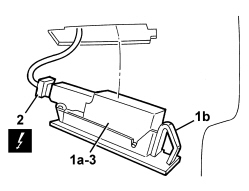

7040G20 BULB HOLDER FOR COMPARTMENT LIGHTING IN DASHBOARD - R.R.
- Path
- Procedures > 70 FITTINGS > 7040 BODY INTERIOR FITTINGS AND TRIM > 7040G VEHICLE COMPARTMENT LIGHTING SYSTEM > 7040G20 BULB HOLDER FOR COMPARTMENT LIGHTING IN DASHBOARD - R.R.
- Kind
- repair procedure (removal / refitting; the operation number is the code)
- Applies to
- all engines; all production periods
- Interactive page
- https://sloeber94.github.io/elrnDB/#/939011260
Applies to: all engines; all production periods
 Removing
Removing
 Refitting
Refitting- Open the compartment cover in the dashboard.
1. Move the courtesy light (1a), releasing the retaining clip (1b).
2. Disconnect the electrical connection.
Description | Component |
|---|---|
COMPARTMENT LIGHT |
3. Keep the courtesy light.

Applies to: all engines; all production periods
- Replace the bulb, if necessary, proceeding as follows.
1. Lift up the protection (1a) releasing the retainers (1b).
2. Extract the bulb from the bulb holder (press fit).

Applies to: all engines; all production periods
Refitting
Removing- Check that the courtesy light and the bulb are not damaged.
- Refit the bulb from the bulb holder (press fit).
- Lower the protection and attach the retainers.
- Connect the electrical connection.
- Place the courtesy light in position and attach the retaining clip.
- Close the compartment cover in the dashboard.
Topics linked from this page (1)
Topics that link to this page (24)
- 5010B24 UNDER-FACIA AIR DUCTS - R.R.
- 5040C10 AIR CONDITIONING CASING - R.R
- 5040C50 AIR CONDITIONING HEATER RADIATOR - R.R.
- 5040C64 A/C EVAPORATOR - R+R
- 5040D75 AIR CONDITIONING RECIRCULATION FLAP CONTROL MOTOR - R.R
- 5040D80 AIR CONDITIONER SYSTEM WIRING BUNDLE - R R OR REPLACE
- 5040D86 AIR CONDITIONING RIGHT AIR MIXTURE FLAP CONTROL MOTOR - R.R
- 5040D94 AIR CONDITIONING LEFT UPPER AIR DISTRIBUTION FLAP MOTOR (DEFROST) - R.R
- 5040D96 AIR CONDITIONING RIGHT UPPER DISTRIBUTION FLAP MOTOR (DEFROST) - R.R
- 5505C31 BUILT-IN WIRING UNDER DASHBOARD - R.R.
- 5505C41 PASSENGER COMPARTMENT WIRING - R.R
- 5580C22 AIR BAG MODULE - PASSENGER SIDE - R.R
- 5580C24 PASSENGER SIDE AIR BAG MODULE SUPPORT R. R.
- 7005A14 FRONT SIDE DOOR - ADJUST CENTERING AND MOULDING - INCLUDES ADAPTATION OF HINGES AND SEALS ON DOOR COMPARTMENT
- 7005A24 FRONT SIDE DOOR HINGES (BOLTED) - R.R. WITH DOOR DETACHED
- 7040A10 DASHBOARD TRIM - R+R
- 7040A14 FLAP OF GLOVE COMPARTMENT TRIM ELEMENT (ONE) - ARRANGE
- 7040A31 DASHBOARD COMPARTMENT ASSEMBLY - R.R.
- 7040G24 SWITCH FOR FACIA COMPARTMENT LIGHT - R+R
- 7210A74 R R FACIA SUPPORT BEAM
- E2520 GLOVE COMPARTMENT LIGHT - BOOT LIGHT - SUN VISOR LIGHT - WIRING DIAGRAM
- E2520 GLOVE COMPARTMENT LIGHT - BOOT LIGHT - SUN VISOR LIGHT - COMPONENT LOCATION
- E2520 GLOVE COMPARTMENT LIGHT - BOOT LIGHT - SUN VISOR LIGHT - WIRING DIAGRAM
- E2520 GLOVE COMPARTMENT LIGHT - BOOT LIGHT - SUN VISOR LIGHT - COMPONENT LOCATION